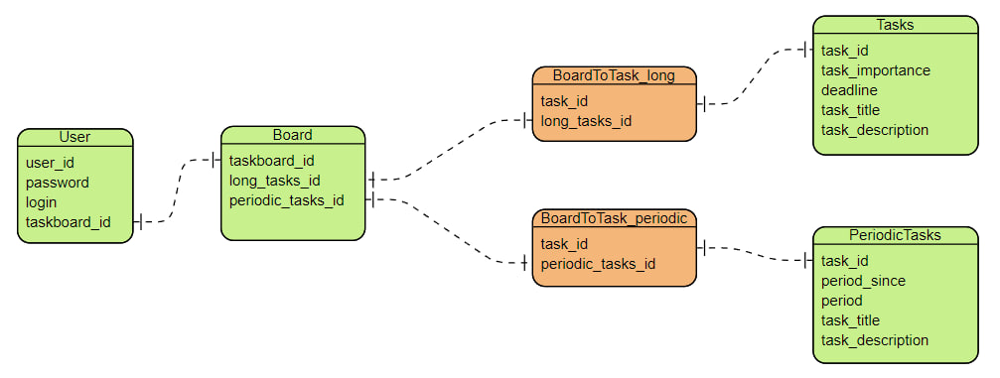

Модели¶
Описание моделей и бд. Нюансы и интересности.
Файл моделей¶
from sqlmodel import SQLModel, Field, Relationship, UniqueConstraint
from typing import Optional, List
from enum import Enum
import datetime
class ImportanceChart(Enum):
A = "A"
B = "B"
C = "C"
D = "D"
E = "E"
F = "F"
class BaseUser(SQLModel):
email: Optional[str] = Field(default=None, primary_key=True, unique=True)
password: str
"""
линк many-to-many между Board и User, юзер может приглашать других юзеров к борде и при этом
иметь несколько борд
"""
class UsersBoardsLink(SQLModel, table=True):
user_id: int = Field(foreign_key="user.id", primary_key=True)
board_id: int = Field(foreign_key="board.id", primary_key=True)
readonly: Optional[bool] = False
class User(BaseUser, table=True):
id: Optional[int] = Field(default=None, primary_key=True)
boards: List["Board"] = Relationship(back_populates="users", link_model=UsersBoardsLink)
"""
С каждой бордой ассоциируется еще две доски для периодичных и длительных тасков
ShortBoard и LongBoard соответственно
"""
class Board(SQLModel, table=True):
id: Optional[int] = Field(default=None, primary_key=True)
users: List["User"] = Relationship(back_populates="boards", link_model=UsersBoardsLink)
class LongBoard(SQLModel, table=True):
id: Optional[int] = Field(default=None, primary_key=True)
board_id: Optional[int] = Field(default=None, foreign_key="board.id")
class ShortBoard(SQLModel, table=True):
id: Optional[int] = Field(default=None, primary_key=True)
board_id: Optional[int] = Field(default=None, foreign_key="board.id")
"""
Длинный таск имеет дедлайн, он долгий и единичный в своей натуре
"""
class BaseLong(SQLModel):
longboard_id: Optional[int] = Field(default=None, foreign_key="longboard.id")
task_importance: Optional[ImportanceChart] = None
date_received: datetime.date = Field(sa_column_kwargs={"default": datetime.date.today()})
deadline: datetime.date = Field(sa_column_kwargs={"default": datetime.date.today()})
task_title: str
task_description: str
class LongTasks(BaseLong, table=True):
id: Optional[int] = Field(default=None, primary_key=True)
"""
Короткий таск появляется с указанным в днях периодом,
период отсчитывается от значения поля date_received
"""
class BasePeriodic(SQLModel):
shortboard_id: Optional[int] = Field(default=None, foreign_key="shortboard.id")
date_received: datetime.date = Field(sa_column_kwargs={"default": datetime.date.today()})
period: int
task_title: str
task_description: str
class PeriodicTasks(BasePeriodic, table=True):
id: Optional[int] = Field(default=None, primary_key=True)
- В данной реализации таск-менеджера реализована возможность приглашать юзеров в свой таскборд и ограничивать редактирование для них (оставлять readonly режим).
- У одного юзера может быть множество таскборд, а к одной таскборде может быть привязано много юзеров.
- Существует два типа тасков: длинные и периодические. Длинные таски имеют дедлайн. Периодический таск появляется с указанным в днях периодом, период отсчитывается от значения поля date_received
- У доски периодических/длинных тасков может быть много привязанных к ним тасков
Общая ERD схема¶
